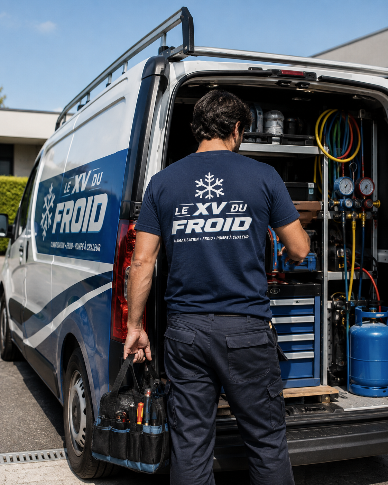
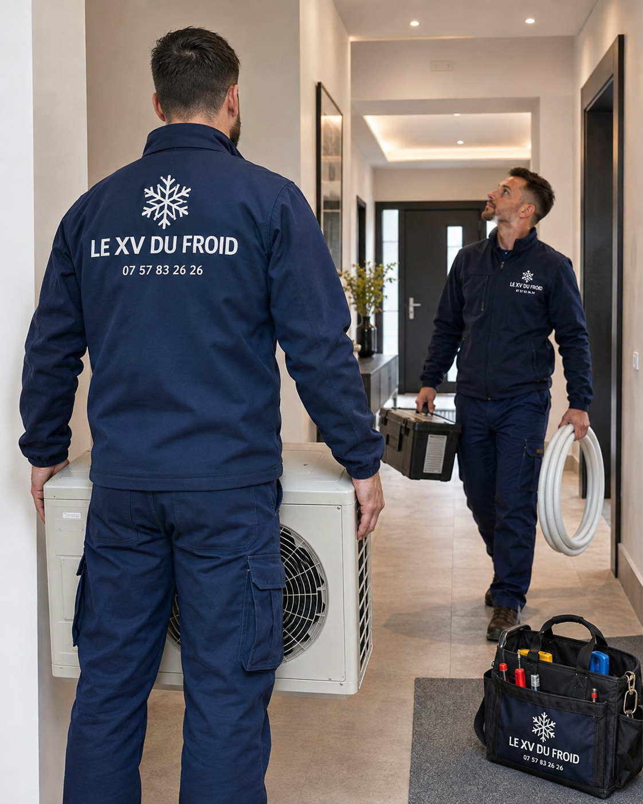

Dimensionnement, raccordements, essais et réglages avant utilisation.
À propos
Le XV du Froid, une équipe qui fait vraiment le travail.
Installation, entretien, dépannage, mise en service, contrôle, réglage et manipulation des fluides frigorigènes quand l’intervention le demande. On vient pour comprendre, faire proprement, et vous laisser une installation qui fonctionne.
- Climatisation & chauffage
- Fluides frigorigènes
- Particuliers & professionnels

Fuite, manque de froid, bruit, code erreur ou arrêt complet.
Nettoyage, contrôle des condensats, soufflage, odeurs et prévention.
Opérations encadrées, récupération, charge et contrôle d’étanchéité.
Notre approche
On préfère le travail clair aux grands discours.
Le XV du Froid intervient sur les installations de climatisation réversible et de chauffage pour les logements, commerces, bureaux, restaurants et petits locaux professionnels. Notre façon de travailler est simple : comprendre le besoin, contrôler l’existant, expliquer ce que l’on voit, puis intervenir avec le bon matériel.
Une climatisation mal dimensionnée, mal entretenue ou réparée trop vite finit souvent par coûter plus cher. Nous préférons prendre le temps de poser le bon diagnostic : puissance, emplacement, état des filtres, évacuation des condensats, unité extérieure, carte électronique, ventilation, pression et circuit frigorifique si nécessaire.
Nos engagements
- Prix annoncé avant réparation ou remplacement
- Techniciens formés aux systèmes de climatisation
- Manipulation des fluides uniquement dans le cadre réglementaire
- Contrôle d’étanchéité, récupération et charge quand l’opération l’exige
- Essais de fonctionnement et explications avant notre départ
Particuliers
Maison, appartement, studio, pièce sous combles : on protège les accès, on limite les nuisances et on explique les réglages utiles.
Professionnels
Commerce, bureau, cabinet, restaurant : on tient compte des horaires, de l’accueil client, du bruit et du besoin de froid en journée.
Ce que nous faisons
De la première pose à la remise en route, on couvre toute la chaîne.

Installation
Pose de climatisation réversible
Choix de puissance, emplacement des unités, passage des liaisons, évacuation des condensats, raccordements et mise en service.

Dépannage
Recherche de panne et réparation
Clim qui ne refroidit plus, fuite d’eau, bruit, code erreur, défaut électrique, télécommande bloquée ou appareil qui s’arrête seul.

Entretien
Nettoyage et maintenance
Filtres, grilles, échangeur accessible, condensats, soufflage, odeurs, essais chaud/froid et conseils d’utilisation.

Technique
Unité extérieure et circuit frigorifique
Contrôle d’étanchéité, récupération, tirage au vide, charge, pression et vérifications quand l’intervention touche au circuit.
Fluides frigorigènes
La manipulation des fluides ne se fait pas à l’aveugle.
Sur une climatisation, certaines opérations touchent au circuit frigorifique : récupération du fluide, recharge, recherche de fuite, remplacement d’un organe, mise en service ou contrôle d’étanchéité. Ces gestes sont encadrés, car le fluide frigorigène ne doit pas être relâché dans l’air.
Nous travaillons avec l’outillage prévu pour ces interventions : manifold, pompe à vide, station de récupération, balance de charge, détecteur de fuite, azote pour les essais sous pression et fiches d’intervention quand elles sont nécessaires.

Savoir-faire
Des gestes précis, parce qu’une clim ne se règle pas au hasard.
Sur une installation, chaque détail compte : puissance, passage des liaisons, évacuation des condensats, bruit, accès à l’unité extérieure, étanchéité et réglages. C’est ce qui fait la différence entre une clim qui tourne correctement et une machine qui fatigue trop vite.
Techniciens formés
Lecture des symptômes, contrôle électrique, ventilation, condensats et circuit frigorifique quand c’est nécessaire.
Fluides encadrés
Récupération, charge, tirage au vide, contrôle d’étanchéité et traçabilité selon l’intervention.
Remise en route contrôlée
Essais chaud/froid, vérification du soufflage, réglage de la télécommande et explication au client.
En images
Notre entreprise, au quotidien.
Valeurs
Ce qui guide nos interventions.
Clarté
Nous expliquons les pannes, les réparations et les limites de chaque solution.
Réactivité
Les pannes de climatisation peuvent être inconfortables, surtout pendant les fortes chaleurs.
Durabilité
Nous privilégions une réparation utile et une installation correctement dimensionnée.

Contact
Une question sur nos interventions ?
Nous vous répondons rapidement, pour un projet ou une panne bloquante.
07 57 83 26 26 Nous contacter